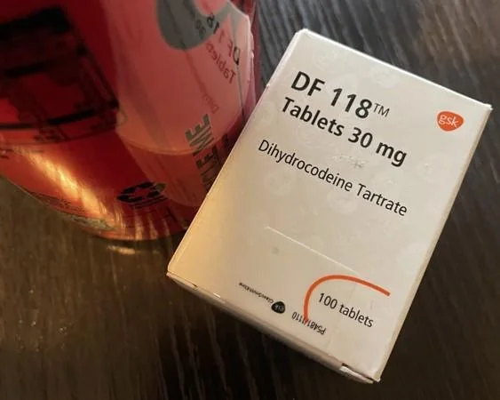

←
Opioides Moderados: Dihidrocodeina

Mecanismo de acción
La dihidrocodeína es un opioide semisintético, derivado de la codeína:
Actúa como agonista parcial de los receptores μ-opioides.
Similar a codeína, aunque ligeramente más potente.
También tiene acción antitusiva.
Indicaciones terapéuticas
Dolor moderado a severo.
Tos crónica no productiva.
Dolor postoperatorio.
En algunos países, se usa en dolor oncológico.
Contraindicaciones
Hipersensibilidad
Asma bronquial descompensada.
Depresión respiratoria.
Niños <12 años.
Uso con alcohol o depresores del SNC..
Vía de administración
Tabletas
Cápsulas
Solución oral.
Posología
Oral: 30 mg cada 4-6 horas.
Dosis máxima diaria: 240 mg.
En combinación con paracetamol o aspirina.
Reacciones adversas
Estreñimiento, náuseas, somnolencia.
Sequedad bucal.
Riesgo de dependencia y tolerancia.
Depresión respiratoria en dosis altas.
Interacciones medicamentosas
Similar a otros opioides: sedantes, ISRS, alcohol.
Metabolizada parcialmente por CYP2D6 → cuidado con inhibidores.
Presentación
DF-118® (GlaxoSmithKline) - Puede variar disponibilidad.
Tabletas de 30 mg.
Codidol® compuesto (marca registrada)
Dihidrocodeína + Paracetamol (30/500 mg) tabletas.